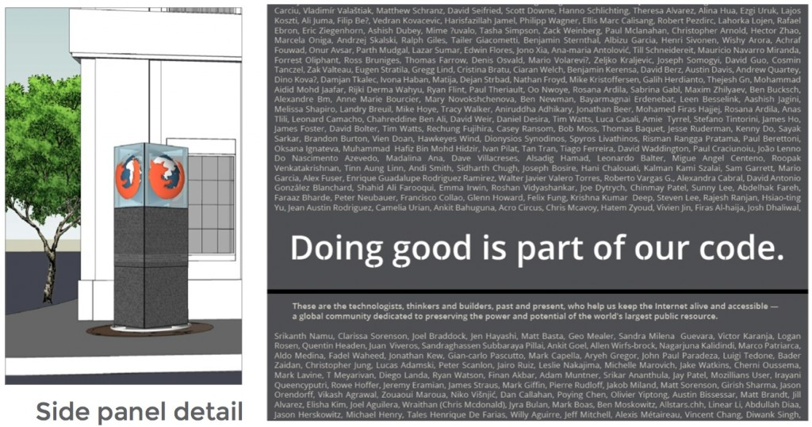

Mozillians 不斷透過有趣的方式讓全世界都能認識 Mozilla 的貢獻者，並藉此凝聚大家的共識與向心力。現在你除了能讓自己進一步登上 Mozilla 榮譽碑之外，我們也需要你呼朋引伴讓其他 Mozillians 一起加入。沒錯！我們正在規劃 1 座高約 4 公尺的榮譽碑，並將座落於舊金山的新辦公室外 (請參考下方概念圖)。此榮譽碑將刻上所有 Mozillian 的姓名。

即刻行動：不論你之前曾為 Mozilla 做出貢獻，或現在仍為 Web 的未來盡心盡力，只要你想讓自己的名字登上榮譽碑，成為 Firefox 永恆的一部分。請務必在 10 月 31 日之前告訴我們。
如果你已經在 mozillians.org 上擁有個人檔案，則請登入並點選 SF Monument 群組頁面上的「Join Group」按鈕即可。加入此群組就代表你想讓自己的名字 (與你個人檔案1 顯示的姓名相同) 出現在此 Mozilla 公共藝術裝置上。
如果你尚未在 mozillians.org 設定個人檔案或無法存取該檔案，則可填寫此份表格，讓我們把你的名字加上榮譽碑。
除了榮譽碑之外，Mozilla 也希望你能將自己名字加入 about:credits。這同樣是讓全世界知道你身為 Mozilla 貢獻者的好方法。你可在 about:credits 頁面下方找到簡易說明。
我們同樣會將 about:credits 內所列的貢獻者姓名加入榮譽碑。但請注意最後期限同樣是 10 月 31 日。快來填寫下方表格吧。
另請將此訊息傳達給所有 Mozillians：不論是前任或現任的 Mozillians，一定還有許多人不知道本篇文章所傳達的訊息。請將本訊息告知你所認識的 Mozillans。貢獻者如果無法登入 mozillians.org 設定個人資料，則只要填寫此表單，Mozilla 就會協助加上各位的姓名。
Barry Munsterteiger 與 William Reynolds 在此對所有貢獻者致上最高謝意
IRC #mozillians
sf-monument@mozilla.com
1 Mozilla 將在榮譽碑上使用的 Open Sans 字型，可能無法支援某些特殊字母。請你檢查該字型中的可用字母。如果發現 Open Sans 並不支援你已登記於 mozillians.org 個人檔案中的字母，則請將正確字母寄給 sf-monument@mozilla.com 讓我們知道。

榮譽碑的細部繪製圖與側面呈現方式